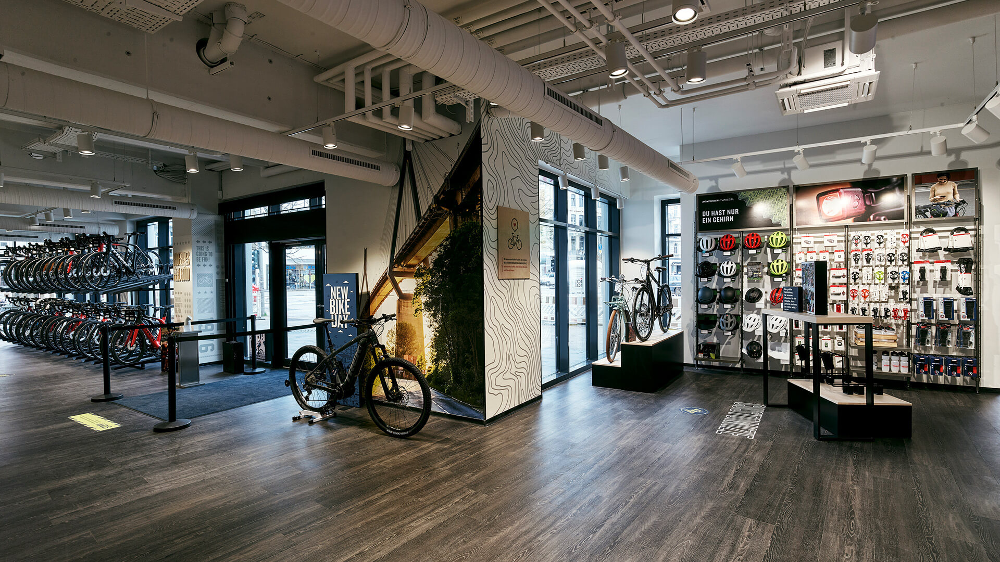

This project allowed me to kickstart my journey in exploring the usage of SQL to clean datasets with the different interactions and commands to explore and understand in detail.
In this project, I explored how Power BI can be used to visualise business performance through interactive dashboards. Using a bike shop dataset, I analysed revenue, profit, and rider demographics to uncover key business insights. The dashboard highlights trends across time, seasons, and rider types, helping identify when and where profits peak.

This project strengthened my understanding of visualisation of data, KPI analysis, storytelling with data, while allowing me to communicate findings clearly through interactive visuals.
In this project, I explored a movie dataset using Python to uncover relationships between factors such as budget, gross revenue, ratings, and runtime. Through data cleaning, transformation, and correlation analysis, I identified strong links between production budgets and box office performance.

This project helped me understand data preprocessing, exploratory data analysis and visualisation tools such as Pandas, Numpy, Matplotlib and Seaborn to draw insights from real-world datasets.
In this project, I built an interactive Power BI dashboard to analyse road accident data across different factors such as location, vehicle type, road conditions, and time of day. The dashboard highlights key KPIs like total casualties, severity breakdowns, and accident trends between urban and rural areas.

This project provided me with a deeper understanding of data visualisation, KPI Tracking, and analytical storytelling, translating the raw dataset into insights that reveal patterns and potential areas for safety improvement.
In this project, I built an interactive Tableau dashboard to analyse the growth of electric vehicles across the US from 2010 to 2024. The dashboard visualises key KPIs, including total vehicles, average electric range, BEV vs. PHEV distribution, and state-wise adoption, providing actionable insights into EV trends and technological advancements.

This project provided me with insights on how to clean, model, and visualise datasets in Tableau and uncover key insights about electric vehicle adoption and performance.